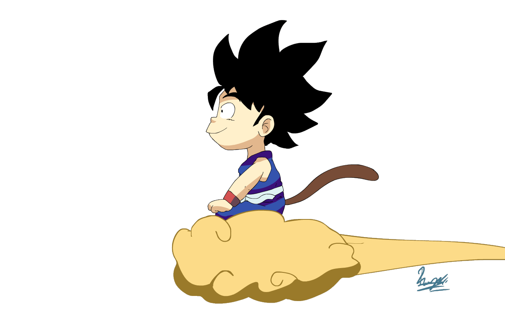
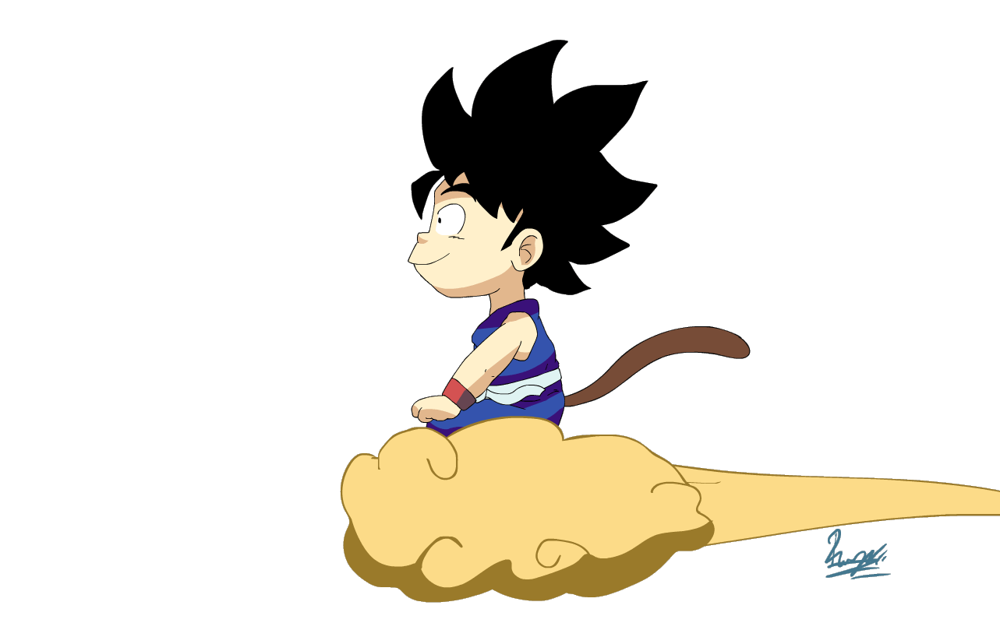

COMPETENCIA 1
COMPETENCIA 2
COMPETENCIA 3
COMPETENCIA 4
COMPETENCIA 5
C1_trabajo 1
C1_trabajo 2
C1_trabajo 3
C1_trabajo 4
C2_trabajo 1
C2_trabajo 2
C2_trabajo 3
C3_trabajo 1
C3_trabajo 2
C3_trabajo 3
C3_trabajo 4
C4_trabajo 1
C4_trabajo 2
C4_trabajo 3
C5_trabajo 1
C5_trabajo 2
C5_trabajo 3
Resumen
En esta actividad aprendimos sobre la auditoria abordando la informatica ya que conocimos los principios y bases de esta rubrica.
 

Mapa conceptual
Esta actividad aborda conceptos clave de auditoría: definición, clasificación, tipos, relación con la auditoría en Informática, normas, procedimientos, etc.
Avance del proyecto
"El avance inicial de la auditoría se centra en el análisis del área LESO, planificación del trabajo y evaluación del control interno para detectar mejoras y riesgos.".
Examen
Una evaluación de conocimiento sobre auditoría que abarca definiciones, tipos, normas, técnicas, riesgos y aplicación práctica.
Exposición
Un evento presenta la norma ISO/IEC 27001:2013, que garantiza la seguridad de la información confidencial en empresas.
Rubrica
Foro
en ests actividad se comentan COSO y COBIT. COSO como que son , para que sirven y el funcionamiento que tienen.
Estudio Auditable
Me ayudo para comprender quea auditoría verifica y evalúa la transparencia, veracidad y cumplimiento de estándares de un estudio para que sea revisable.
Cronograma
Se hizo la norma ISO 45001 se realizzaron bajo: Preparación, Auditoría interna, Informe de auditoría, Acciones correctivas, Auditoría de seguimiento
Plan de auditoria
Un documento que detalla cómo se realizará la auditoría para cumplir con la norma ISO 45001 de seguridad y salud laboral.
Foro
En el foro de competencia 3 se analizará la relevancia de evaluar el hardware, resaltando sus ventajas en rendimiento y seguridad tecnológica.
Examen
El quiz de competencia 3 evalúa el conocimiento y comprensión del hardware, fomentando el aprendizaje en esta área específica.
Exposición
Presentamos información ética y precisa sobre un tema asignado, mediante investigación sólida, organización y comunicación clara en una exposición responsable.
Foro
En el foro Competencia 4, se analizarán las normas ISO 45001 y NMXI-27001-NYCE-2015, su impacto en seguridad laboral y gestión de información, y se intercambiarán experiencias de implementación.
Avance del Proyecto
Se abordo las regulaciones ISO 45001 y NMXI-27001-NYCE-2015, su influencia en seguridad laboral, gestión de información y compartirá prácticas de implementación.
Proyecto
Proyecto LESO: Evaluación integral de seguridad y salud laboral, abarcando análisis de peligros, legalidad, inspección de instalaciones, protocolos y registros. Objetivo: Mejorar y fomentar un ambiente de trabajo seguro.
Organizador Grafico
Se llevará a cabo un análisis exhaustivo de las telecomunicaciones, cubriendo su propósito, requisitos, gestión, implementación, protección, personal y cumplimiento normativo. La información se mostrará en una tabla de comparación.
Portafolio de Evidencias
Este portafolio lo decidi hacer de esta forma ya que me gusta la programación y la maestra nos pidio algo creativo y creatividad + programación un gran proyecto.